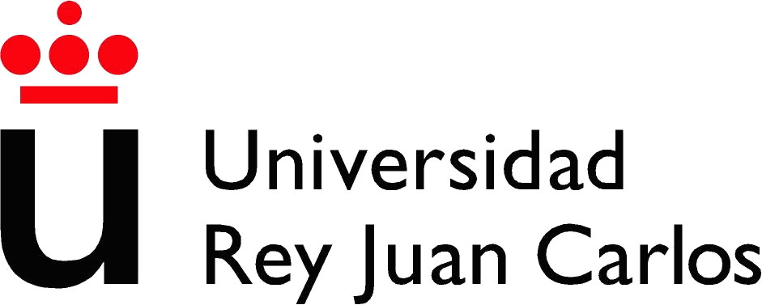

<div class="portada">
    <div class="portada-container">
        <!-- Header -->
        <div class="portada-header">
            
            
            <div class="portada-escuela">
                Escuela Técnica Superior de<br>
                Ingeniería Informática
            </div>
        </div>
        
        <!-- Contenido principal -->
        <div class="portada-main">
            <h1 class="portada-titulo">
                Optimización y Análisis de Redes
            </h1>
            
            <h2 class="portada-subtitulo">
                Guía de la Asignatura
            </h2>
            
            <div class="portada-grado">
                Grado en Matemáticas
            </div>
            
            <div class="portada-autores-section">
                <div class="portada-autores-titulo">Autores</div>
                <div class="portada-autor">Víctor Aceña Gil</div>
                <div class="portada-autor">Emilio López Cano</div>
                <div class="portada-autor">Javier Martínez Moguerza</div>
            </div>
            
            <div class="portada-fecha">2026-2027</div>

        </div>
        
        <!-- Footer -->
        <div class="portada-footer">
            
            
            <div class="portada-licencia-texto">
                Copyright © 2026 Víctor Aceña Gil, Emilio López Cano, Javier Martínez Moguerza. Esta obra está licenciada bajo CC BY-SA 4.0, Creative Commons Atribución-Compartir Igual 4.0 Internacional.
            </div>
        </div>
        
        <!-- Elementos decorativos -->
        <div class="portada-deco-lines">
            <div class="portada-deco-line"></div>
            <div class="portada-deco-line"></div>
            <div class="portada-deco-line"></div>
        </div>
        <!-- TEXTO VERTICAL LATERAL -->
        <div class="portada-info-lateral">
            <span>MATERIAL DOCENTE EN ABIERTO · UNIVERSIDAD REY JUAN CARLOS · JUNIO 2026</span>
        </div>
    </div>
</div>
